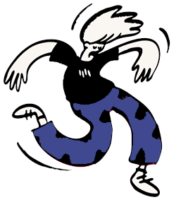

Hola! somos Chew Müli Waka
Chew muli waka es un grupo de percusión por lenguaje de señas que nació en el año 2020 en la ciudad de Chivilcoy, al calor de la pandemia y frente al deseo de conectar, compartir, fluir, liberar y enraizar colectivamente a través de los tambores.
